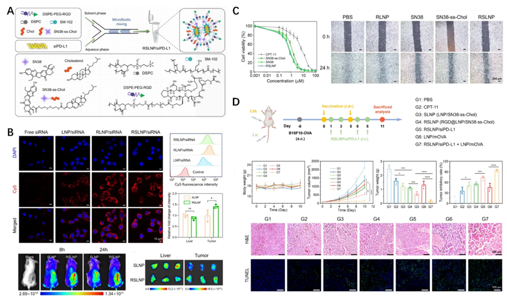

Research Background and Significance
Rewiring the tumor immune microenvironment is key to enhancing the efficacy of tumor immunotherapy. The research team developed a lipid nanoparticle (LNP) system capable of simultaneously delivering the chemotherapeutic prodrug SN38 and siRNA targeting PD-L1. By inducing immunogenic cell death (ICD) through SN38 and blocking immune checkpoints via siRNA, this synergistic approach effectively reverses the tumor immunosuppressive microenvironment, transforming “cold tumors” into “hot tumors.” This significantly enhances the immunogenicity of mRNA tumor vaccines. In highly malignant melanoma and triple-negative breast cancer models, RSLNP/siPD-L1 significantly enhanced the antitumor activity of mRNA tumor vaccines even at low doses (Nano Today 2025, 102757). This research provides novel strategies and delivery approaches for combination immunotherapy centered on mRNA tumor vaccines. Additionally, the research team concurrently advances studies on neoantigen design for personalized tumor vaccines and in vivo precision modification of immune cells. Collaborative translational partnerships with multiple publicly listed companies have been established, laying a solid foundation for advancing tumor immunotherapy from mechanism research to clinical application.
Core Methods and Technologies

Figure 1. (A) Synthesis and characterization of RSLNP/siPD-L1. (B) Cellular delivery and tumor targeting capabilities of RSLNP/siPD-L1. (C) RSLNP enhances drug cellular uptake and efficiently inhibits migration of B16F10 cells. (D) Tumor suppression effect of combined RSLNP/siPD-L1 and mRNA vaccine therapy in melanoma.